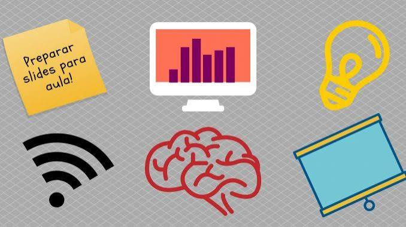

Programação
Aprenda HTML, CSS e JavaScript criando seus primeiros projetos web.
Conectando jovens a oportunidades que transformam vidas.
Encontre oficinas gratuitas, cursos, vagas de primeiro emprego e projetos sociais para impulsionar seu futuro.
Seu futuro começa com uma oportunidade!
Ver oportunidadesAprenda HTML, CSS e JavaScript criando seus primeiros projetos web.
Explore cores, tipografia e layout para criar interfaces bonitas.
Monte robôs, programe sensores e descubra a tecnologia na prática.

Seja objetivo: dados pessoais, objetivos, escolaridade e cursos. Sem experiência? Destaque sua vontade de aprender.
Chegue no horário, seja educado, olhe nos olhos e mostre interesse pela vaga.
Chegar no horário demonstra responsabilidade. Saia de casa com antecedência.
Cadastre seu e-mail e receba novas oportunidades em primeira mão.